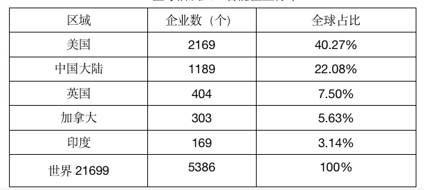
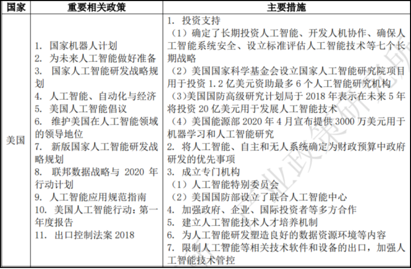

全球人工智能处于积极发展阶段，且美国在该领域具有明显领先的国际实力，中国也在积极发展。
中国信息通信研究院 2019 年发布 的《全球人工智能产业数据报告》显示，截至 2019 年 3 月，全球有 5386 家活跃人工智能企业，较为集中在美国和中国地区。美国有 2169 家活跃人工智能企业，占总数量的 40.27%，主要集中在加州、纽约州和马萨诸塞州。中国大陆有 1189 家活跃人工智能企业，占总量的 22.08%，主要集中在北京、上海、广东和江浙。英国、加拿大和印度 分别有 404 家、303 家和 169 家活跃企业，各占总量的 7.50%、5.63% 和 3.14%。
全球活跃人工智能企业分布
各国对发展人工智能的重要性均有深刻的理解，也纷纷出台了战 略规划和发展计划，增加人工智能研发领域的投资，促进政府、企业、 国际投资者等的多方合作，重视人工智能相关领域人才培养，并设立专门机构服务人工智能发展。
典型国家发展人工智能的促进政策
